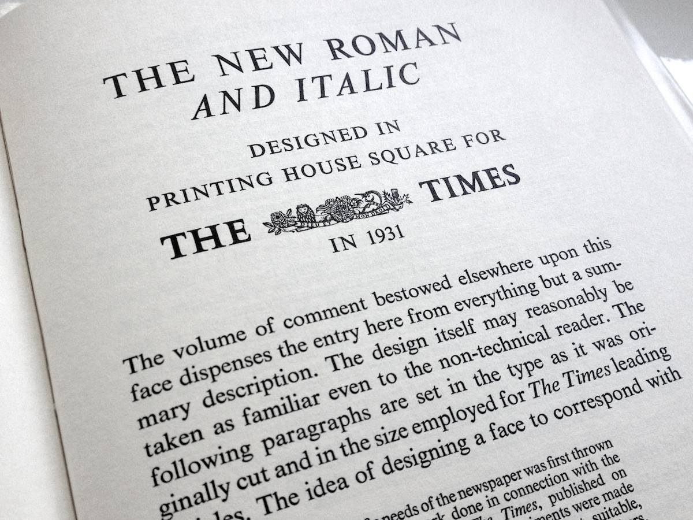

Sabon was designed by German typographer Jan Tschichold beginning in 1964 and released in 1967. It was produced by three foundries, D. Stempel AG, Linotype, and Monotype. It was created so it could be used by the three types of metal type printers, foundry type for hand composition, linecasting, and single-type machine composition.Tschichold’s used 16th century typefaces as inspiration, with Sabon’s design being connected to Garamond roots. The typeface is named after Jakob Sabon, who was the student of French punchcutter Claude Garamond. Sabon completed a set of Garamond’s punches after his death and eventually went on to become owner of a German foundry. When Sabon died in 1580, his widow, daughter of printer Christian Egenolff, remarried Konrad Berner, who took over the foundry. Tschichold based the design of Sabon from a specimen sheet released by the Egenolff-Berner foundry: a 14 point roman accredited to Claude Garamond and an italic accredited to Robert Granjon. The name Sabon was chosen to distinguish the typeface from the names Garamond and Granjon.
Sabon is an old-style serif typeface. Sabon is described as classic, elegant, and particularly legible—making it an excellent choice for text in book and magazine design. As for some of the specifics, Sabon has a generous x-height, bracketed serifs, short descenders, the characters end at an angle, and some characters have ball terminals.
Times New Roman—1932, Stanley Morison
Times New Roman first appeared in 1932 in the London newspaper, The Times. Originally, The Times faced criticism for its outdated typographic choices by respected type designer Stanley Morison, of the English branch of Monotype. In response, the newspaper asked for Morison to create a better typeface for them. The current typeface of the newspaper was titled “Times Old Roman” so the new typeface was debuted in 1932 and called “Times New Roman”. Morison utilized the help of draftsmen Victor Lardent, from the advertising department of The Times, and the two began creating a typeface that focused on efficiency (maximizing the amount of type of a page to be economical) and readability (so reading could be easier on the viewer’s eyes). Morision took inspiration from the typeface Plantin, which was based on the 16th century typeface Gros Cicero, designed by Robert Granjon. The font quickly became popular since it was being used in a daily newspaper. It became offered as a commercial font in 1933 and quickly took off thanks to its legibility and style. It began as a monotype and linotype font and was later translated to digital and phototype. It has remained popular over the years and is the standard for many platforms and formats today.
Times New Roman is an old-style serif typeface. Morison made specific modifications to the characters, so that the typeface would serve its intended purpose for its commissioner. The typeface has a raised x-height, shorter descenders, and narrow tracking, for a more condensed look. This allows for tighter line space, so more lines/text can fit on each pageIt also has large counters and apertures, its ball terminal creates a larger contrast between the strokes. Morison altered the shape of the characters so when printed, that the letters would hold more ink and appear darker.
Comparison
In each example, Times New Roman is on the first line and Sabon is on the second.
Similarities:
From first glance, these two fonts looks very similar, and they do share similarities. Overall, both Sabon and Times New Roman have higher x-heights, shorter descenders, and tend to be used as body text in magazines, articles, newspapers, etc.Capital L in Times New Roman and Sabon have very similar serifs and weights. They both have a slight tilt to the bottom serif and similar curvatures. Although Times New Roman does narrower serifs.Times New Roman and Sabon have the same x-height.The numbers look very similar as well. The apex serif on the 1 is much longer in Sabon and the serif on the 7 in Times is much more curved. Lastly, the 5 and 9 in Sabon are more elongated.Looking at the V for Times New Roman and Sabon, you can see they are very similar. The V in Times New Roman has a wider vertex and opening between the serifs. Sabon’s V has thicker serifs and a narrower/taller vertex.
Differences:
The link/neck of the Times New Roman g is much skinnier than Sabon. Sabon's g has a more rounded descender loop.The f in Times New Roman has a more curved and wider terminal, whereas Sabon has a shorter a straighter terminal. The Times New Roman f also has a skinny and straight crossbar, which Sabon does not have.The Q in Times New Roman has a straighter terminal, whereas Sabon has a thicker and more curved terminal. Sabon also has a more curved/wider counter.For this example, Sabon is on the left and Times New Roman is on the right. The ! in Sabon has a larger period, whereas the ! in Times New Roman is narrower.In this comparison you can see that the serifs of Times New Roman on C and G go up and down, while serifs on Sabon tend to only slope down. Times New Roman has smoother and crisp terminals, while Sabon has curvy ends. Times New Roman has a shorter capline and uppercase x-height. The question mark from Times New Roman appears to be proportional and straight. This contrasts the fact that the ampersand appears more italicized than the ampersand from Sabon. Sabon uses slightly larger circles for the dot and has a more ornate ampersand. The terminals at the top of the m in Times New Roman have squared off ends. The terminals at the top of the m in Sabon have triangular ends. The terminals at the bottom of n on Times New Roman are flattered with a thinner curve. The terminals at the bottom of the n at Sabon are thicker and less refined.
Examples and visual references
Sabon
Event invite using Sabon font.Kiss me, stupid & 7 more solo piano pieces album by Iiris Viljanen.EyeQ lens solution from Synsam.The Mother Journal by Lorena Manhães.Hamburg Airport signs photograph by Albert-Jan Pool.
Times New Roman
The Times New Roman and italic poster by Stanley Morison.

A Tally of Types by Stanley Morison.Koyil & Polam poster.Our Solar System from Gemini Home Entertainment.New Roman Times album by Camper van Beethoven.New Roman Times novel by Evan Brown.